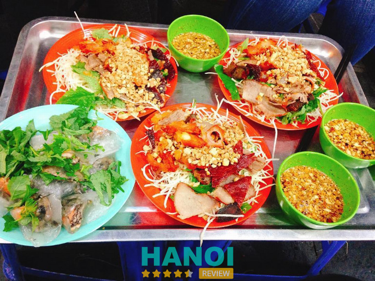
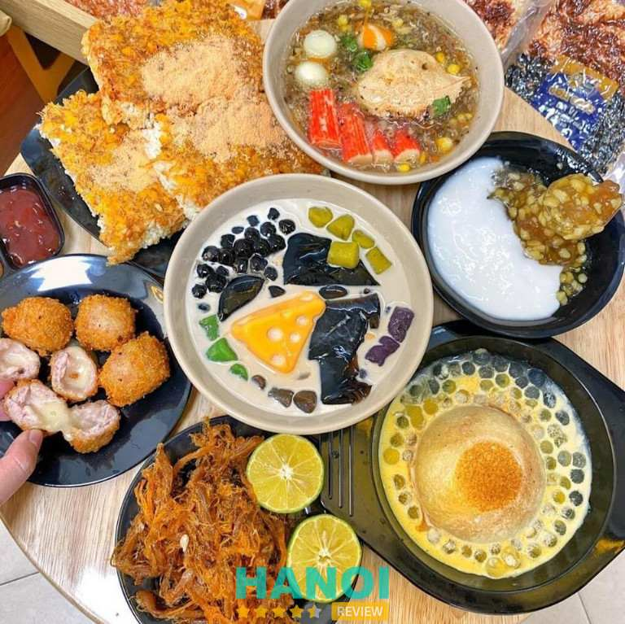
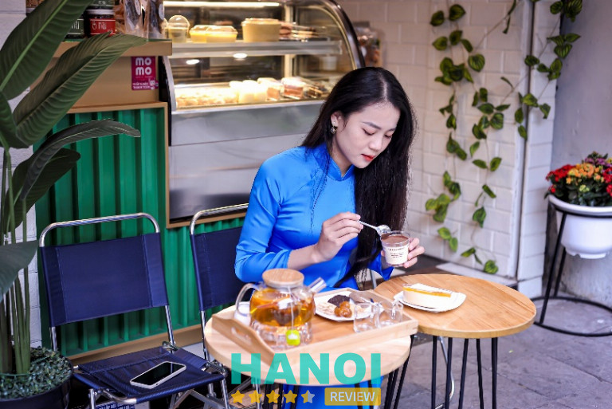
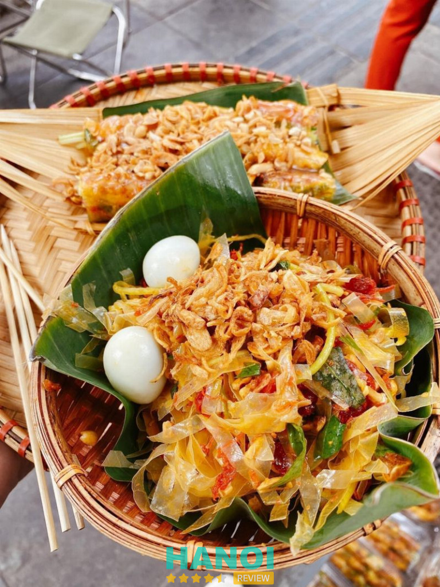
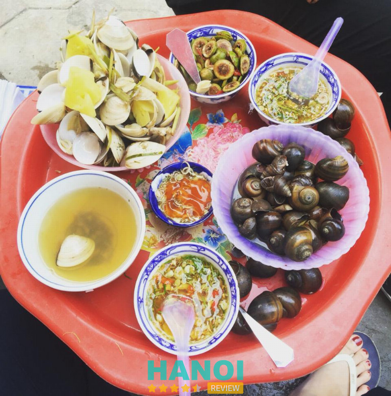
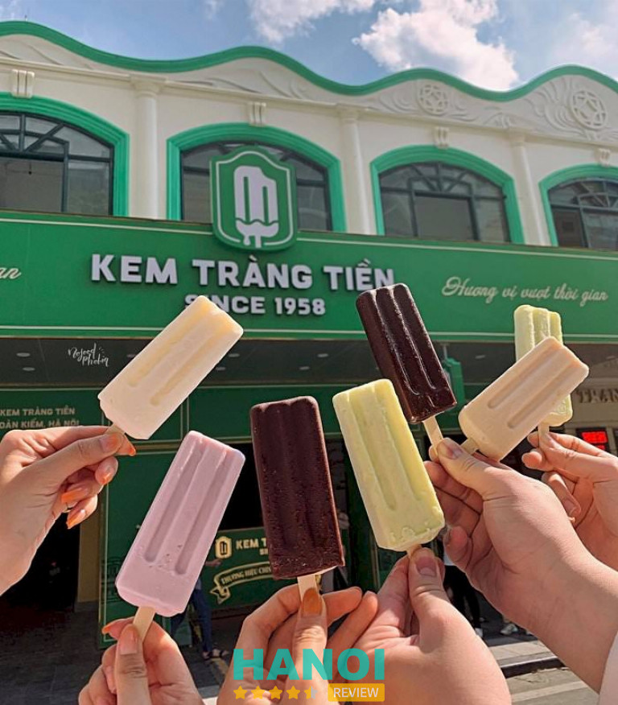
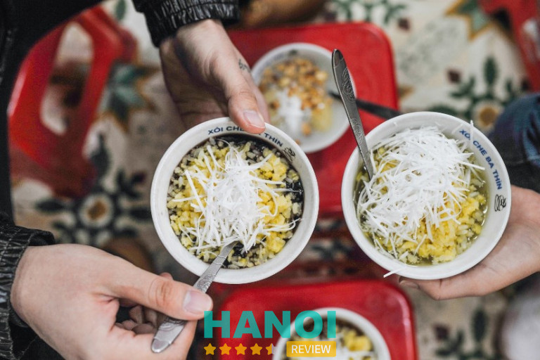
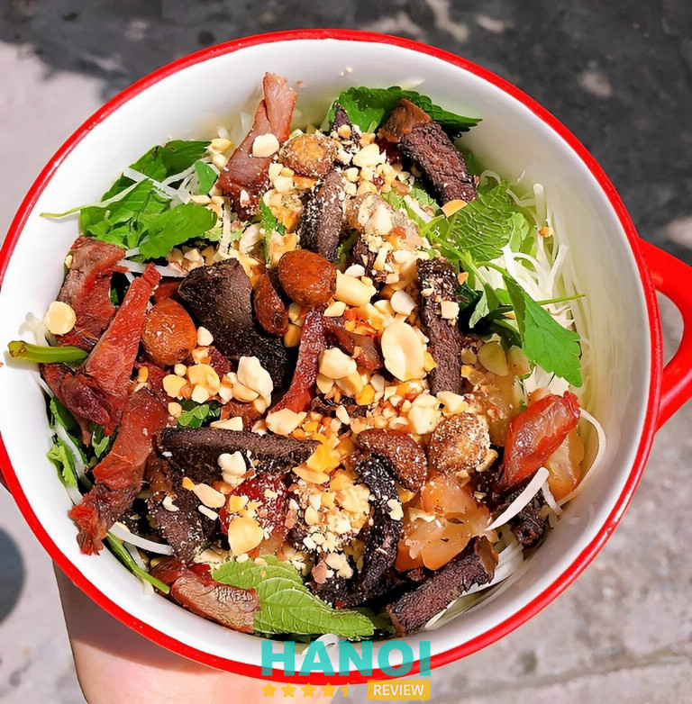
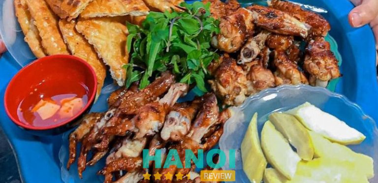
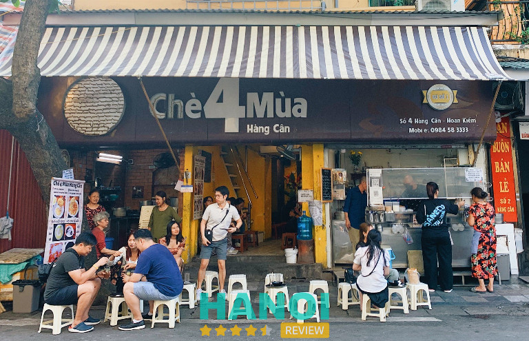

10 Quán ăn vặt quanh Hồ Gươm ngon, bổ rẻ, đáng trải nghiệm
Hồ Gươm không chỉ là điểm đến văn hóa được nhiều người yêu thích mà còn là “thiên đường ăn vặt” với vô số món ngon, bổ, rẻ làm say lòng thực khách. Quanh Hồ Gươm, bạn sẽ tìm thấy rất nhiều quán ăn vặt ngon, từ những món ăn truyền thống đến các hương vị biến tấu sáng tạo, phù hợp cho cả dân địa phương lẫn du khách.
Top 10 Quán ăn vặt quanh Hồ Gươm ngon, bổ rẻ, chất lượng
Dạo quanh Hồ Gươm và khám phá các quán ăn vặt không chỉ là một trải nghiệm ẩm thực, mà còn là cách tuyệt vời để cảm nhận nhịp sống phố cổ Hà Nội. Với gợi ý về 10 quán ăn vặt ngon bổ rẻ quanh Hồ Gươm này sẽ giúp bạn có được một buổi thư giãn tuyệt vời cùng bạn bè, người thân của mình.
Long Vi Dung Nộm Thịt Bò Khô
Nếu có dịp dạo bước quanh khu vực Hồ Hoàn Kiếm và muốn tìm chút món ăn vặt để nhâm nhi thì Long Vi Dung – quán nộm bò khô gia truyền nổi tiếng chắc chắn là một điểm dừng chân không thể bỏ qua của nhiều thực khách. Từ lâu, đây đã là điểm đến quen thuộc của người dân Hà Nội và du khách nhờ vào hương vị đặc trưng và đậm đà của nộm bò khô – món ăn mang đậm chất Hà thành.
Không gian quán Long Vi Dung tuy không lớn nhưng sạch sẽ, thông thoáng và ấm cúng. Điều này làm cho mỗi trải nghiệm tại đây trở nên dễ chịu và thoải mái, nhất là khi quán thường xuyên đón lương khách đông đảo. Hơn thế, nhờ vào cách phục vụ nhanh nhẹn và thái độ thân thiện, hiếu khách của đội ngũ nhân viên, khách hàng luôn cảm thấy được chào đón và phục vụ chu đáo, dù vào những giờ cao điểm.

Menu của Long Vi Dung khá giản dị, chỉ với khoảng 6-7 món, nhưng mỗi món đều được chăm chút tỉ mỉ và mang hương vị đặc trưng dễ thưởng thức. Hai món “best” của quán là nộm bò khô và bánh bột lọc – những món ăn đã góp phần làm nên thương hiệu của Long Vi Dung. Nộm bò khô ở đây nổi bật bởi sự kết hợp hài hòa giữa đu đủ giòn ngọt, bò khô dai cay và nước trộn chua ngọt hấp dẫn, trong khi bánh bột lọc lại mềm, dai vừa phải, đậm vị nhân tôm thịt.
Ngoài món nộm bò khô trứ danh, quán Long Vi Dung còn phục vụ nhiều món ăn vặt hấp dẫn khác như nộm chim, nem chua, nem cuốn – mỗi món đều mang hương vị riêng biệt và dễ dàng làm xiêu lòng thực khách. Nộm chim đặc biệt thơm ngon nhờ vào hương vị đậm đà và thịt chim mềm, thơm, kết hợp cùng các loại rau tươi mát, tạo nên trải nghiệm ẩm thực độc đáo.
Một điểm đặc biệt mà ít nơi nào có được chính là món tỏi chiên giòn tan, đặc sản độc quyền của Long Vi Dung. Tỏi chiên ở đây được chế biến khéo léo, giòn thơm mà không bị đắng, khi ăn cùng nộm tạo nên hương vị lạ miệng và lôi cuốn. Hương thơm của tỏi chiên hòa quyện cùng vị chua cay của nộm, mang đến sự bùng nổ vị giác độc đáo, làm nên nét hấp dẫn riêng biệt của quán ăn gia truyền này.
Mỗi món ăn tại Long Vi Dung có giá từ 35.000 – 50.000 VND, một mức giá tương đối hợp lý và phù hợp với chất lượng món ăn ngon tại khu vực phố cổ Hà Nội. Với chi phí này, thực khách có thể thưởng thức những món ăn vặt đặc trưng, được chế biến cẩn thận và mang hương vị đặc sắc của Hà thành.
Thông tin liên hệ:
- Địa chỉ: 23 Hồ Hoàn Kiếm, P. Hàng Trống, Q. Hoàn Kiếm, Hà Nội
- Điện thoại: 0904 656 708
Xem thêm: 10 Quán cafe view Hồ Gươm cực đẹp, đáng checkin nhất
Chick Garden
Chick Garden là thương hiệu chuỗi cửa hàng dịch vụ kinh doanh ẩm thực nổi bật tại Việt Nam, được nhiều thực khách ưa chuộng tại Hồ Gươm – một trong những địa điểm sôi động và hấp dẫn nhất Hà Nội. Với không gian sạch sẽ và thoáng đãng, Chick Garden không chỉ đem đến một nơi ăn uống tiện nghi mà còn là điểm dừng chân lý tưởng để tận hưởng những món ăn vặt đặc sắc cùng gia đình và bạn bè.
Thực đơn của Chick Garden rất phong phú và đa dạng, bao gồm các món ăn vặt hấp dẫn như gà rán, khoai tây chiên, trà sữa và nhiều loại đồ uống mát lạnh khác. Mỗi món ăn đều được chế biến tỉ mỉ với nguyên liệu tươi ngon, đảm bảo mang đến hương vị đậm đà, độc đáo và phù hợp với khẩu vị của nhiều thực khách.

Không chỉ chú trọng đến chất lượng món ăn, Chick Garden còn gây ấn tượng bởi phong cách phục vụ chu đáo và thân thiện. Nhân viên luôn sẵn sàng hỗ trợ và mang lại cảm giác thoải mái cho khách hàng. Chính vì vậy, Chick Garden không chỉ là nơi ăn uống mà còn là điểm đến lý tưởng cho những ai muốn thư giãn và trải nghiệm ẩm thực độc đáo ngay giữa lòng Hà Nội.
Đặc biệt, giá cả tại Chick Garden cũng vô cùng phải chăng, chỉ từ 25.000 VND bạn đã có thể dễ dàng thưởng thức các món ăn vặt ngon miệng mà không lo về chi phí. Với mức giá hợp lý này, Chick Garden sẽ mang đến nhiều lựa chọn phong phú từ gà rán giòn rụm, khoai tây chiên thơm phức đến các loại đồ uống mát lạnh như trà sữa, nước ép, thoải mái để bạn thưởng thức.
Thông tin liên hệ:
- Địa chỉ: 57 Nguyễn Hữu Huân, P. Lý Thái Tổ, Q. Hoàn Kiếm, Hà Nội
- Điện thoại: 098 669 4416
- Email: thangnm1702@gmail.com
- Website: chickgarden.vn
- Fanpage: FB.com/chick.gar
Ăn Vặt Mẹ Sữa
Ăn Vặt Mẹ Sữa chính là điểm đến lý tưởng cho những ai yêu thích món ăn vặt thơm ngon, lành mạnh và tinh tế tại Hồ Gươm. Với triết lý “Đừng ăn nếu không ngon,” Mẹ Sữa không ngừng nỗ lực để mang đến những món ăn không chỉ bắt mắt mà còn đậm đà hương vị. Đây không chỉ là một câu slogan mà còn là kim chỉ nam, thể hiện sự tâm huyết và tình yêu mà thương hiệu dành cho từng món ăn.
Mẹ Sữa chú trọng đến từng chi tiết nhỏ nhất trong quy trình chế biến. Nguyên liệu được chọn lọc kỹ lưỡng, đặc biệt là các loại đường thiên nhiên như đường thốt nốt hoặc đường phèn. Những nguyên liệu này không chỉ giúp món ăn có vị ngọt thanh, dễ chịu mà còn đảm bảo sức khỏe cho người thưởng thức. Bên cạnh đó, các món ăn tại Mẹ Sữa luôn được chế biến với hàm lượng đường vừa phải, rất phù hợp cho những ai đang theo đuổi một lối sống lành mạnh.

Hơn thế, không gian quán cũng được thiết kế rộng rãi và thoáng mát để tạo cảm giác dễ chịu cho mọi khách hàng. Đồng thời, đội ngũ nhân viên của Mẹ Sữa luôn thân thiện, chuyên nghiệp, sẵn sàng phục vụ với nụ cười và thái độ chu đáo để giúp thực khách có được trải nghiệm ẩm thực hài lòng nhất.
Với sự tỉ mỉ trong từng món ăn và không gian thân thiện, Mẹ Sữa đã trở thành một địa điểm quen thuộc của người dân, đặc biệt là những người yêu thích các món ăn vặt Việt Nam truyền thống tại Hà Nội. Mỗi món ăn tại đây không chỉ đơn thuần là một bữa ăn mà còn là một trải nghiệm đáng nhớ, một cảm giác an lành mà Mẹ Sữa muốn trao gửi đến từng thực khách.
Thông tin liên hệ:
- Địa chỉ: 03 Lý Đạo Thành, P. Tràng Tiền, Q. Hoàn Kiếm, Hà Nội
- Điện thoại: 0246 2944 588
- Website: anvatmesua.vn
- Fanpage: FB.com/AnVatThuDo.24h
Bánh Tráng Bé My
Bánh Tráng Bé My là một gánh hàng nhỏ nhắn nằm duyên dáng bên cạnh Hồ Gươm, mang đến cho thực khách một trải nghiệm ẩm thực đường phố vừa bình dị, vừa ấm áp. Với không gian không quá lớn nhưng được bày trí khéo léo, gọn gàng và sạch sẽ, Bánh Tráng Bé My luôn thu hút mọi người qua lại bởi vẻ ngoài giản dị nhưng tinh tế. Mỗi chi tiết ở đây đều được chăm chút cẩn thận, khiến thực khách cảm thấy dễ chịu, thoải mái ngay từ ánh nhìn đầu tiên.
Bánh tráng của Bé My có độ dẻo thơm vừa phải, quyện cùng vị mặn ngọt hấp dẫn, mỗi miếng đều mang đến cảm giác “ăn rất cuốn.” Thưởng thức bánh tráng tại đây là một trải nghiệm vừa gần gũi vừa độc đáo, giúp mọi người tạm quên đi những xô bồ, ồn ào của thành phố, chỉ còn lại vị ngon trọn vẹn trong từng lớp bánh tráng và một chút thanh bình bên Hồ Gươm yêu dấu.

Đặc biệt, gánh hàng đã có một thay đổi thú vị, từ những hộp nhựa quen thuộc ngày trước nay chuyển sang các mẹt tre lót lá chuối. Sự đổi mới này không chỉ làm món ăn thêm phần hấp dẫn mà còn rất thân thiện với môi trường, thể hiện sự quan tâm của Bánh Tráng Bé My đến thiên nhiên và cộng đồng.
Không chỉ món ăn, mà chị chủ hàng ở đây cũng là một điểm nhấn khó quên trong lòng thực khách. Với sự thân thiện, niềm nở, chị luôn chào đón mọi người bằng nụ cười và thái độ chu đáo. Sự nhiệt tình của chị không chỉ tạo ra bầu không khí ấm áp mà còn khiến khách hàng cảm thấy như được thưởng thức món ăn do chính người thân trong gia đình chuẩn bị.
Thông tin liên hệ:
- Địa chỉ: 33 Quang Trung, P. Trần Hưng Đạo, Q. Hoàn Kiếm, Hà Nội
- Điện thoại: 0824 757 777
- Fanpage: FB.com/100063574750962
Quán ốc bà câm
Quán ốc Bà Câm là một trong những quán ốc độc đáo nhất khu vực quanh Hồ Gươm, và là điểm đến quen thuộc của nhiều tín đồ ẩm thực Hà thành. Gánh ốc nhỏ nhưng nổi danh này được vợ chồng bà Hàn Tuyết Khánh gầy dựng và duy trì suốt gần 30 năm qua. Với những món ốc tươi ngon và cách phục vụ khác biệt, quán ốc Bà Câm đã tạo nên nét riêng rất đặc biệt giữa lòng thủ đô, thu hút thực khách từ khắp nơi đến trải nghiệm.
Điều làm nên sự độc đáo của quán ốc Bà Câm chính là toàn bộ nhân viên và chủ quán đều là người khiếm thính. Không cần ngôn từ, thực khách đến đây vẫn có thể gọi món một cách dễ dàng bằng cách ra hiệu tay chân, hoặc đơn giản là chỉ vào món mình muốn thưởng thức. Đây không chỉ là một phương thức giao tiếp độc đáo mà còn là nét duyên riêng của quán, mang lại cho thực khách cảm giác gần gũi và ấm áp trong từng cử chỉ.

Quán ốc không có menu truyền thống, thay vào đó là những đĩa ốc mít, ốc vặn, ngao, nem chua, hoa quả dầm được xếp ngay ngắn trên một khay nhỏ, giúp thực khách dễ dàng lựa chọn. Khách chỉ cần chỉ vào món mình muốn ăn và ra dấu số lượng bằng tay, thế là mọi thứ đã sẵn sàng. Sự tiện lợi và thú vị trong cách gọi món này làm cho trải nghiệm tại quán ốc Bà Câm trở nên khác lạ và vô cùng ấn tượng.
Không chỉ có món ốc luộc tươi ngon, các món ăn kèm như ngao, nem chua rán, và chân gà ngâm giấm của bà Khánh cũng được nhiều người yêu thích. Ngao tươi rói, nem chua rán vừa miệng, và chân gà giòn sần sật đều là những món ăn chơi nổi tiếng tại quán. Với giá cả hợp lý và chất lượng đảm bảo, quán ốc Bà Câm đã trở thành điểm dừng chân lý tưởng cho những ai muốn khám phá một chút vị mặn mà và sự bình dị trong ẩm thực Hà thành.
Thông tin liên hệ:
- Địa chỉ: 05 Tống Duy Tân, P. Hàng Bông, Q. Hoàn Kiếm, Hà Nội
- Điện thoại: 0946 949 619
Xem thêm: 10 Quán lẩu tại Hà Nội giá rẻ, ngon bất bại cho giới sành ăn
Kem Tràng Tiền
Kem Tràng Tiền, ra đời năm 1958 và được biết đến là một biểu tượng ẩm thực gắn liền với người dân Thủ đô và du khách. Với hơn 60 năm phát triển, thương hiệu này đã trở thành một phần không thể thiếu trong văn hóa ẩm thực Hà Nội.
Kem Tràng Tiền cung cấp nhiều loại kem phong phú, đáp ứng sở thích đa dạng của thực khách:
- Kem ốc quế: Vỏ ốc quế giòn tan kết hợp với kem mát lạnh, tạo nên hương vị khó quên.
- Kem que: Các hương vị truyền thống như cốm, đậu xanh, sữa dừa, sô-cô-la, mang đến trải nghiệm quen thuộc.
- Kem Mochi: Sự kết hợp giữa kem mát lạnh và lớp vỏ mochi dẻo dai, tạo nên món tráng miệng độc đáo.
- Kem hộp: Phù hợp cho gia đình hoặc nhóm bạn, với nhiều hương vị lựa chọn.
- Kem tươi: Kem mềm mịn, thơm ngon, thích hợp cho những ai yêu thích sự tươi mới.

Điều đặc biệt của Kem Tràng Tiền là sự hòa quyện giữa hương vị truyền thống và phong cách hiện đại. Dù trải qua nhiều năm, kem vẫn giữ nguyên hương vị đặc trưng, đồng thời không ngừng cải tiến để đáp ứng nhu cầu ngày càng cao của khách hàng. Sự kết hợp này giúp Kem Tràng Tiền duy trì vị thế trong lòng thực khách qua nhiều thế hệ.
Hơn thế, Kem Tràng Tiền còn được sản xuất từ nguyên liệu tự nhiên, không chứa phẩm màu, đảm bảo an toàn và vệ sinh. Quy trình sản xuất cũng đảm bảo tuân thủ các tiêu chuẩn nghiêm ngặt, mang đến sản phẩm chất lượng cao, đáp ứng sự tin tưởng của người tiêu dùng.
Thông tin liên hệ:
- Địa chỉ: 35 Tràng Tiền, Q. Hoàn Kiếm, Hà Nội
- Điện thoại: 0969 963 839
- Email: kdonline@kemtrangtien.vn
- Website: kemtrangtien.vn
- Fanpage: FB.com/kemtrangtiensince1958
Bà Thìn – Xôi Chè và Bánh Trôi
Xôi chè Bà Thìn là một địa chỉ quen thuộc đối với các tín đồ mê đồ ngọt tại Hồ Gươm Hà Nội. Nằm khiêm tốn trên vỉa hè, quán sở hữu không gian khá nhỏ với một chiếc quầy đựng đủ loại chè, bên ngoài là những chiếc ghế nhựa giản dị cho thực khách ngồi ăn. Dù vậy, quán vẫn luôn đông khách, đặc biệt vào cuối tuần.
Một ly chè tại Xôi chè Bà Thìn tuy đơn giản nhưng lại gây ấn tượng nhờ vị thanh mát và ngon miệng. Thực đơn của quán phong phú với các món phù hợp cho cả hai mùa. Vào mùa hè, tào phớ mát lạnh, chè thập cẩm và nước hoa nhài kết hợp với thạch đen là lựa chọn yêu thích của nhiều người. Đến mùa đông, không khí ấm cúng lan tỏa với các món đặc trưng như xôi vò và bánh trôi tàu – hai món làm nên thương hiệu của quán.

Ngoài các món chè, quán Xôi chè Bà Thìn còn phục vụ một số loại bánh truyền thống như bánh cốm xào, kẹo lạc, bánh chín tầng mây và bánh cốm nhân đậu xanh. Với thực đơn đa dạng và hương vị truyền thống, Xôi chè Bà Thìn không chỉ là nơi thưởng thức món ngon mà còn là điểm đến mang đậm nét văn hóa ẩm thực Hà thành.
Giá cả tại Xôi chè Bà Thìn dao đồng từ 15.000 VNĐ đến 33.000 VNĐ.
Thông tin liên hệ:
- Địa chỉ: 01 Bát Đàn, Q. Hoàn Kiếm, Hà Nội
- Điện thoại: 0936 628 887
Nộm bò khô cô Vân
Nộm bò khô cô Vân là một địa chỉ quen thuộc với những ai yêu thích hương vị nộm bò truyền thống. Quán đã mở hơn chục năm nhưng hương vị món ăn vẫn giữ nguyên như thuở ban đầu, khiến thực khách quay lại nhiều lần vẫn cảm thấy quen thuộc và thân thương.
Điểm nổi bật của món nộm ở đây là thịt bò khô dày miếng, vừa mềm dai, ngọt đậm đà tự nhiên. Nước nộm chua ngọt được nêm nếm khéo léo, ăn kèm với đu đủ bào giòn giòn, tạo nên sự thanh mát hài hòa. Đặc biệt, quán còn có món tỏi cháy giòn tan, thơm lạ miệng – một điểm nhấn đặc biệt mà ít nơi có.

Với mức giá phải chăng từ 10.000 – 50.000 VNĐ, Nộm bò khô cô Vân vẫn luôn là một lựa chọn tuyệt vời cho bất kỳ ai muốn thưởng thức hương vị nộm bò truyền thống quanh khu vực Hồ Gươm.
Thông tin liên hệ:
- Địa chỉ: 16B Đường Thành, P. Cửa Đông, Q. Hoàn Kiếm, Hà Nội
- Điện thoại: 096 194 88 82
- Email: nga77735@gmail.com
- Fanpage: FB.com/nomcovan16bduongthanh
Chân gà nướng Ngõ Gạch
Chân gà nướng Cây Đa ở Ngõ Gạch là một địa chỉ quen thuộc của những ai yêu thích món nướng thơm ngon giữa lòng Hà Nội. Với hơn 30 năm hoạt động, quán vẫn giữ nguyên hương vị đặc trưng và đã làm say lòng biết bao thực khách từ những ngày đầu.
Quán có không gian không quá rộng rãi nhưng rất ấm cúng, đặc biệt là vào những đêm đông se lạnh. Bàn ghế nhựa được sắp xếp gọn gàng, sạch sẽ, tạo cảm giác thoải mái cho thực khách. Bên trong, quán còn được trang bị quạt thông gió nên dù đơn giản nhưng vẫn rất thoáng, không gây cảm giác oi bức hay khó chịu.

Thực đơn tại đây cũng khá giản dị, chủ yếu là chân gà và cánh gà nướng – hai món đặc sản đã làm nên thương hiệu của quán. Ngoài ra, thực khách còn có thể gọi thêm bánh mì nướng giòn tan, nem chua rán, nem chua nướng, khoai tây chiên và các loại hoa quả.
Quán chân gà nướng Cây Đa không chỉ nổi tiếng với hương vị đặc trưng mà còn có mức giá rất hợp lý. Với chỉ 18.000 VND, thực khách đã có thể thưởng thức 2 xiên chân gà nướng thơm ngon, đậm vị. Cánh gà nướng cũng rất đáng thử với giá 30.000 VND mỗi cái, vừa tẩm ướp đậm đà vừa được nướng chín tới. Ngoài các món chính, quán còn có nhiều món phụ để lựa chọn với mức giá dao động từ 10.000 đến 70.000 VND.
Thông tin liên hệ:
- Địa chỉ: 21 Ngõ Gạch, Q. Hoàn Kiếm, Hà Nội
- Điện thoại: 024 3928 3262
Chè Bốn Mùa 4 Hàng Cân
Quán Chè Bốn Mùa tại số 4 Hàng Cân là một địa chỉ lâu đời gắn bó với người dân Hà Nội suốt gần 50 năm. Ra đời từ trước năm 1975, quán đã trở thành ký ức đẹp của biết bao thế hệ. Điểm đặc biệt của quán là phong cách phục vụ theo mùa: “mùa nào thức nấy” mang đến cho thực khách những món chè tươi ngon, phù hợp với thời tiết.
Vào những ngày hè, thực đơn quán phong phú với các món chè đỗ đen, chè thập cẩm, chè sen đá, chè khúc bạch, sữa chua mít, sữa chua nếp cẩm… Mùa đông đến, quán bổ sung những món chè nóng như bánh trôi nóng, chè sắn nóng, lục tàu xá, chí mà phù – những món ăn không chỉ ngon mà còn giúp xua tan cái lạnh đặc trưng của Hà Nội.

Không gian quán nhỏ nhưng rất ấm cúng, với một chiếc quầy đựng nguyên liệu chè và một khoảng ngồi trong nhà, còn chủ yếu là những ghế nhựa bày dọc vỉa hè. Chè Bốn Mùa phục vụ liên tục từ 9h sáng đến 11h đêm. Dù là ngày hè nắng nóng hay đông lạnh giá, quán vẫn luôn đông khách, đặc biệt vào buổi tối và cuối tuần, khiến nơi đây trở thành điểm đến quen thuộc của người dân Hà Nội và du khách.
Các món chè tại Chè Bốn Mùa Hàng Cân có mức giá rất hợp lý, dao động từ 20.000 đến 30.000 VND, phù hợp với túi tiền của nhiều đối tượng khách hàng, từ học sinh, sinh viên đến người lớn tuổi. Với mức giá này, thực khách có thể thưởng thức các món chè truyền thống thơm ngon ngay giữa trung tâm Hà Nội.
Thông tin liên hệ:
- Địa chỉ: 04 Hàng Cân, P. Hàng Cân, Q. Hoàn Kiếm, Hà Nội
- Điện thoại: 0984 583 333
- Email: che4muahc@gmail.com
- Website: foootstr.my.canva.site/che4muahangcan
- Fanpage: FB.com/che4muahangcan
7 Tiêu chí chọn Quán ăn vặt quanh Hồ Gươm ngon
Để chọn được những quán ăn vặt vừa ngon vừa đúng chất Hà Thành, bạn sẽ cần một chút bí quyết, bởi mỗi góc phố nơi đây đều ẩn chứa những hương vị độc đáo và câu chuyện riêng.
- Uy tín lâu năm: Lựa chọn các quán ăn đã có tên tuổi hoặc được người dân địa phương tin tưởng trong nhiều năm. Những quán ăn lâu đời thường có công thức gia truyền, mang hương vị đặc trưng không thể tìm thấy ở nơi nào khác.
- Nguyên liệu tươi: Một trong những tiêu chí quan trọng để đánh giá quán ăn ngon là nguyên liệu tươi và cách chế biến. Những quán ăn chuẩn bị món ăn ngay tại chỗ như bánh gối chiên, bún riêu, hoặc nem chua rán thường có chất lượng tốt.
- Đặc sản Hà Nội: Hãy chọn những quán tập trung vào một vài món đặc sản vì họ sẽ có công thức chuẩn và hương vị đặc trưng, giúp bạn trải nghiệm ẩm thực Hà Nội đích thực.
- Giá cả hợp lý: Một quán ăn vặt tốt quanh Hồ Gươm thường có giá cả hợp lý và phần ăn vừa phải để bạn có thể thử nhiều món.
- Vệ sinh: Chọn những quán có khu vực bếp mở để bạn dễ quan sát quy trình chế biến. Mặc dù một số quán có vẻ ngoài giản dị, nhưng bạn có thể thấy họ chăm chút trong khâu dọn dẹp và bảo quản nguyên liệu – điều này rất quan trọng khi thưởng thức các món ăn đường phố.
- Đông khách: Một mẹo nhỏ khi chọn quán ăn vặt quanh Hồ Gươm là hãy để ý những quán có đông người xếp hàng hoặc có nhiều người lui tới.
- Vị trí đẹp: Để trải nghiệm trọn vẹn, hãy tìm những quán có không gian nhìn ra Hồ Gươm hoặc nằm trong các ngõ phố cổ gần đó.
Dù bạn là người yêu thích ẩm thực hay chỉ đơn giản muốn tìm một góc nhỏ thư giãn thì những quán ăn vặt quanh Hồ Gươm đều có thể mang đến cho bạn một trải nghiệm ẩm thực độc đáo và khó quên. Mong rằng qua những thông tin này, bạn đọc sẽ có được những lựa chọn phù hợp với sở thích của bản thân để cùng thưởng thức những món ăn thơm ngon của Hà Nội.
Có thể bạn quan tâm
- 10 Quán bún cá ngon nổi tiếng tại Hà Nội lâu đời nhất
- 10 Quán bánh canh ghẹ tại Hà Nội tươi ngon, chất lượng nhất
- 10 Quán bún chả ngon ở Hà Nội nổi tiếng đông khách nhất
DOANH NGHIỆP: Đăng tải thông tin MIỄN PHÍ.
Tin đọc nhiều


8 Tiệm bánh mì tại Phố Cổ ngon nổi tiếng, hút khách nhất
Các tiệm bánh mì ở Phố Cổ luôn hiện diện tại khắp các con ngõ lớn nhỏ của thành phố. Không chỉ là món ăn...

10 Quán bún đậu mắm tôm Phố Cổ Hà Nội ngon nổi tiếng, lâu đời
Thật là một thiếu sót nếu bạn chưa từng thưởng thức bún đậu mắm tôm – món ăn đặc trưng của Hà Nội. Để cảm...

10 Quán bánh canh ghẹ tại Hà Nội tươi ngon, chất lượng nhất
Nếu bạn đang tìm kiếm một món ăn vừa đậm đà hương vị biển vừa thanh nhẹ, thì bánh canh ghẹ sẽ là lựa chọn...

10 Quán bún cá ngon nổi tiếng tại Hà Nội lâu đời nhất
Các quán bún cá ngon nổi tiếng tại Hà Nội lâu đời vẫn luôn có sức hút đặc biệt trong lòng thực khách. Mỗi quán...

Trở thành người đầu tiên bình luận cho bài viết này!